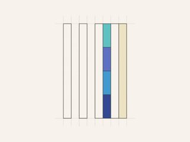
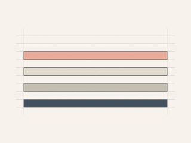

Art Blocks: the code and the token's seed are on-chain; the record, preview and live view come from Art Blocks' servers — these are our copies.
2 works · 6 files: for each work our copies of its record, its image (the preview) and its live view (the page that draws the art in a browser), each pinned at Pinata and Filebase and archived in S3. The code libraries the live views load are kept the same way. A marketplace reading the token's address goes to Art Blocks' servers, not to these copies; the copies keep the record, preview and live view if those servers stop, and their fingerprints are in the public list (see how these works are kept and proven). Artists are credited as the works' own records name them.

0xababababab20053426ad1c782de9ea8444358070bafkreicjlipyh54755furx6b6d4kx5s5pewcdrk7bhhj2rzr7ymbzu7k4i gateway.pinata.cloud · ipfs.filebase.io · c-ipfs-gw.nmkr.io — 2026-10-24 · pinned at Pinata and Filebase, archived in S3495a1f83f79fef4b48dfc1f0f8abf65d792c21c55f09ce9d4731fe181cd3eae2 · 3,284 byteshttps://token.artblocks.io/0xababababab20053426ad1c782de9ea8444358070/…bafkreihg6jkqn44f6oz3fakpuzsxj5ju3vjfjsooe62spu2dcbekaj6qfy gateway.pinata.cloud · ipfs.filebase.io · c-ipfs-gw.nmkr.io — 2026-10-24 · pinned at Pinata and Filebase, archived in S3e6f25506f385f3b3b2814fa66574f534dd5254c9ce27b527d3431048a027d02e · 255,721 byteshttps://media-proxy.artblocks.io/1/0xababababab20053426ad1c782de9ea844…bafkreianctm6nq6y5w5yfaibwkvifvxznmyfrbgzkvohn7bvgj4nfmjqiq gateway.pinata.cloud · ipfs.filebase.io · c-ipfs-gw.nmkr.io — 2026-10-24 · pinned at Pinata and Filebase, archived in S30d14d9e6c3d8edbb828101b2aa82d6f96b305884d9555c76fc353278d2b13044 · 186,410 byteshttps://generator.artblocks.io/1/0xababababab20053426ad1c782de9ea84443…
0xababababab20053426ad1c782de9ea8444358070bafkreialbclg5thdojoxovxh7mnctknawrpueuit6bv6bppjojvdrpj464 gateway.pinata.cloud · ipfs.filebase.io · c-ipfs-gw.nmkr.io — 2026-10-24 · pinned at Pinata and Filebase, archived in S30b08966ecce3725d7756e7fb1a29a9a0b45f425113f06be0bde9726a38bd3cf7 · 3,272 byteshttps://token.artblocks.io/0xababababab20053426ad1c782de9ea8444358070/…bafkreia2plakucbnw7oxobo3wsqnji5xpmocspcq5odr2wjjxkbe2ry62u gateway.pinata.cloud · ipfs.filebase.io · c-ipfs-gw.nmkr.io — 2026-10-24 · pinned at Pinata and Filebase, archived in S31a7ac0aa082db7dd7705dbb4a0d4a3b77b1c293c50eb871d5929ba824d471ed5 · 240,447 byteshttps://media-proxy.artblocks.io/1/0xababababab20053426ad1c782de9ea844…bafkreibvio2scrfoyxbksxxgfo637kji7y3ryjt6z5t5ditgc3m5xjywky gateway.pinata.cloud · ipfs.filebase.io · c-ipfs-gw.nmkr.io — 2026-10-24 · pinned at Pinata and Filebase, archived in S33543b52144aec5c2a95ee62bbdbfa928fe371c267ecf67d1a26616d9dba71656 · 186,410 byteshttps://generator.artblocks.io/1/0xababababab20053426ad1c782de9ea84443…Generated archive pages. Content identifiers point to the public IPFS network.